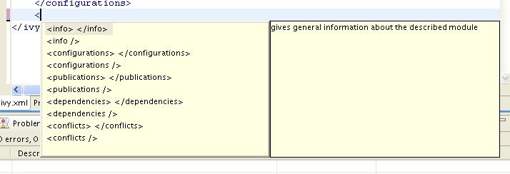

Documentation (trunk)
IvyDE is the Eclipse plugin which intergrate Ivy into your java development enviromnent. It includes:
- an Ivy xml files editor: creation wizard, html preview and completion for Ivy xml tag, attributes but also attributes' values.
- an Ivy settings files editor: completion for xml tag, attributes but also attributes' values.
- a classpath container: automatic downloads, access "resolve" task from your IDE, and resolve in Eclipse's workspace
- an Ivy console: presents every log from Ivy, really helpful to debug a failing resolve
- an Reverse Dependency Explorer: help you work with conflicting dependencies amongs several projects
Compatibility
Upgrading/Downgrading
This version is compatible with every earlier Apache release (since 2.0.0.alpha1). Any upgrade of IvyDE should work without any worries.The reverse is not true, downgrading is not supported and may break your configuration
Dependency on Ivy
IvyDE expects to be used with a version 2.1 or superior of Ivy.Eclipse integration
IvyDE has been maintained to be compatible with Eclipse 3.2, 3.3, 3.4 and 3.5.JVM compability
IvyDE has been kept compatible with Java 1.4.Installation
Install the last release via Internet
For most user who have access to the internet it is simpler to install the latest release from the IvyDE updatesite. So just look out there:http://ant.apache.org/ivy/ivyde/download.cgi
Manual install
Install IvyDE
So you should have the zip distribution of IvyDE in which you should find these files:- features/org.apache.ivyde.feature_2.1.0.XXXX.jar
- plugins/org.apache.ivyde.eclipse_2.1.0.XXXX.jar
cp features/* $ECLIPSE_HOME/features
cp plugins/* $ECLIPSE_HOME/plugins
Install the latest Ivy bundle
Get the latest Ivy feature and bundle for the updatesite:- the features folder
- the plugins folder
Restart Eclipse
After installing manually your plugins, you have to restart your Eclipse to have it take into account the changes. It is recommended to restart it with the -clean option on the command line.Classpath Container
As the Ivy's ant target to manage classpath, the IvyDE classpath container will help you manage the classpath of your Eclipse project, based on the dependencies declared in the Ivy files.
So you probably want to:
- Create a container
- Edit its setup
- Launch the resolve of the dependencies
- Retrieve the dependencies in your project
- Resolve dependencies within the Eclipse workspace
- Launch software or unit tests with a classpath managed by IvyDE
- Use IvyDE with maven pom.xml
- Use IvyDE in concert with WTP
Create a container
First you should have somewhere an ivy.xml file or a maven pom.xml ready to be used to build a classpath, along if needed with an ivysettings.xml.
Standard creation
The standard way to add the IvyDE classpath container is to manipulate the Eclipse's "Build Path":- Select the project in which you want to create a IvyDE classpath container and open the "Add Libraries" form of Eclipse (In package Explorer, in popup menu of your project choose : [Build Path]/[Add Libraries]).

- Select "IvyDE Managed Dependencies" item.

- Select an ivy.xml file or a maven pom.xml and the desired configurations.


Fast creation
For most of the projects, the ivy.xml file (or the pom.xml) is in the java project. So you can just right click on the ivy.xml and select "Add Ivy Library..." and you will direclty access the prefilled setup of the IvyDE classpath container
Edit the classpath
During life of your project you can change the ivy.xml file or maven pom.xml and change the configuration you want
to use.
These properties can be accessed by contextual menu of the IvyDE class path container:

This is particularly useful when Eclipse hides the empty classpath containers (since Eclipse 3.3), and then this is only way to trigger a resolve.

Launching resolve
You can explicitly ask for a dependencies resolution from your class path container.
This command will invoke the "resolve" ivy task and update your class path container.
There is also a "refresh" action: this action is similar to the resolve one, it just doesn't do a full resolve if a report already exists in the cache. This is particularly useful if you work also with ant and a command line so you won't do two full resolve.

You can also trigger a resolve (not a refresh!) of every IvyDE classpath container in the workspace via the button in the tool bar of Eclipse.

And to launch a resolve on a specified selection of projects:
- select the projects you want to resolve in the package view,
- open the context menu with a right click
- Choose Ivy > Resolve
Retrieve the dependencies
It is possible to make IvyDE copy the resolved dependencies in your project: a retrieve of the dependencies can be triggered on each resolve of the classpath container.
To enable it, enter the classpath container configuration panel, and hit the second tab "Retrieve".
The Retrieve pattern specified the location where the deendencies should be copied, location raltive to the containing project.
The Delete old retrieved artifacts check box will enable the wipe out the output directory before each retrieve.
And finally you can select in which Configurations the dependencies should be resolved and you can select which Types of artifact should be actually retrieved. In both fields, * will means all.
Clean the caches
Within IvyDE it is possible to clean the different Ivy caches.
On a configured IvyDE classpath container, open the contextual menu and select the Clean Ivy cache entry. It will then show the list of configured caches.
- All: it will wipe out every cache
- Resolution cache: it will wipe out only the cache of resolution report
- Every repository cache: it will wipe out every cache dedicated to the artifacts
- Cache 'xxxxxx': it will wipe out only the cache with the specified name
Reload settings
In case you have selected the "Reload the settings only on demand" option in the preferences, you can manually reload the settings via the context menu on the classpath container.
- reloading the settings will automatically launch a resolve
- reloading the settings in a project will not make other projects reload their settings even if they use the same settings file
Resolve in workspace
Some projects are composed of mulpliple modules, modules having dependencies between them, dependencies managed by Ivy (of course!). Then sometimes we need to build and publish some modules before building the dependant one. Eclipse can handle classpath composed of Java project, it can handles dependencies between projects, and IvyDE can use that feature.
First every of your modules should be separated projects in Eclipse, and each of this project should have an IvyDE classpath container configured.
To enable resolution in the workspace, go into the advanced configuration panel of the classpath container and select Resolve dependencies in workspace.
- obviously the org and name
- if there is a rev specified, dependencies should specify the appropriate range
- if there is no rev specified, only dependencies with lastest will match
- the status should match the required one: a dependency with latest.integration will only match if there is status="interation" in the info of the dependant module
| A dependency on B | B declared revision | result |
|---|---|---|
| latest.integration | 1.2 | B wired on A |
| 1.2 | 1.2 | B wired on A |
| [1.2,1.3) | 1.2 | B wired on A |
| 1.0 | 1.2 | no project wiring |
| latest.integration | none | B wired on A |
| 1.2 | none | B wired on A |
| [1.2,1.3) | none | B wired on A |
| latest.integration | $version | no project wiring |
| 1.2 | $version | no project wiring |
| [1.2,1.3) | $version | no project wiring |
Launch configuration
The IvyDE classpath container can also be used in the launch configuration, run or debug. The container will be used because it is included in the default classpath of you project, or by adding it yourself to your launch classpath.
In the project's classpath
It is the simpler configuration, configuration that you implicetely have when you do a "Run As..." on a Java class. The container you see in the launch classpath is actually the one you have in your project in the package explorer.
But having the compile classpath might not be appropriate for some launch configuration, so you will have to manage it yourself.
Managing manually
You want to have more control over the classpath of your launch configuration, so you will have to edit it, and manage the IvyDE container in there.Creating a launch configuration, you will get the default classpath as above. So the first step is to remove it. And you probably want to readd your project in the user entries. Then to add an IvyDE container, choose "Advanced":


To enable the resolve before each launch, go into the "Advanced" tab and select "Resolve before launch".
Use with maven poms
If you want to use a maven pom.xml instead of ivy.xml file, you just have to select a pom file in the configuration form of IvyDE class path.
When a maven pom is selected, the configurations list is updated with all maven scopes.
Both examples below are a good illustration of maven pom use simplicity :
Maven1 Sample
This sample presents a simple use case of maven pom for IvyDE class path container. We are going to create an eclipse project on commons-httpclient sources.- Download the commons httpclient sources
- Unzip this file (c:/tmp/commons-httpclient/)
- Create a new Eclipse java project based on the unzipped sources (c:/tmp/commons-httpclient/)

Notes: your project do not compile: some imports cannot be resolved.


Maven2 Sample
This sample shows that IvyDE Class path container on a Maven2 pom can handle transitive dependancies.- Create a new empty java project in eclipse.
- In your project, create an ivysettings.xml file:
<ivysettings>Using the m2compatible attribute, you can benefit from Maven2 repository compatibility.
<conf defaultResolver="ibiblio"/>
<resolvers>
<ibiblio name="ibiblio" />
</resolvers>
</ivysettings>
- In your project, create a pom.xml file:
<project>- On the pom.xml file, open the context menu and click on "Add Ivy Library...":
<modelVersion>4.0.0</modelVersion>
<groupId>com.mycompany</groupId>
<artifactId>myproject</artifactId>
<version>1.0-SNAPSHOT</version>
<dependencies>
<dependency>
<groupId>commons-httpclient</groupId>
<artifactId>commons-httpclient</artifactId>
<version>3.0</version>
</dependency>
</dependencies>
</project>
- Select the configuration compile and runtime

WTP integration
WTP is the Web Tools Platform project from the Eclipse fondation which allow to easily develop, launch and debug web applications. IvyDE can be used with this framework, but only from the version 2.0 of WTP, which is supported since Eclipse 3.3.
In the properties of your project configured to use WTP, there is a section "Java EE Module Dependencies". There should be your configured IvyDE classpath container listed, usually with the name "ivy.xml [*]". Just select it and the Ivy dependencies will be deployed as well.

IBM Rational Application Developer (RAD) 7.5.3+
Users of RAD 7.5.3 will notice that the classpath container is not listed in the table. RAD prevents the deployment of classpath containers by default. To allow this behavior, selection Windows -> Preferences -> Java EE. Check "Allow loose classpath module dependencies". RAD will present you with a warning message. To enable the behavior, you need to check the option again in the popup and click Yes.
- export RSA preferences ( File -> Export: General -> Preferences)
- open exported .epf file and replace
/instance/org.eclipse.jst.j2ee/org.eclipse.jst.j2ee.preferences.allowClasspathDep=false
with
/instance/org.eclipse.jst.j2ee/org.eclipse.jst.j2ee.preferences.allowClasspathDep=true - load modified epf
Ivy file editor
Edit your ivy files easily in eclipse with the IvyDE Plugin editor.
IvyDE brings creation wizard, html preview and completion for Ivy xml tag, attributes but also for attributes' values!
Choose an organisation and browse thru its projects and revisions.
Wizard
IvyDE comes with a wizard that allows you to create an ivy.xml file for your project.To open the wizard choose File->New->Other in the Eclipse menu (Ctrl+N by default)
The Ivy wizard is accessible in the category Other. Select it then click Next
- Wizard fields:
- Container: you have to select the targeted project. (This is already set if you access the wizard thanks right click menu on your project root folder)
- File name: the ivy file name. (ivy.xml by default and its better to keep it in most of case)
- Organisation: the component owner name. (your company name or the company that provides the component if you are writing ivy.xml file for 3rd party jars). Note this value can be set in the Ivy preference page
- Module name: the component name.
- Status: the status of the project. (integration by default since we have just created its ivy file :-). Please refer to Ivy documentation for more details)
Ivy Editor

Completion comes with contextual help. The completion popup is displayed when hitting simultaneously the CTRL and the SPACE keys.
Available completions:
- Xml structure: allows you quickly to insert the good tag at its right place. If the tag can have nested children both notations, simple tag and open tag, are proposed
 - Tag attributes: when your cursor is placed in a tag bracket the completion show available attributes for the enclosing tag.

- Attributes values: when your cursor is placed in the quote of an attribute value the completion shows available values for the matching attribute.
- Available value completion
- info: organisation (pref based), module (eclipse project name),
- info/ivyauthor: name (pref based), url (pref based)
- info/description: homepage (pref based)
- info/license: name
- info/repository: name (the other attributes depend on it), url, ivys, pattern, artifacts
- configurations/conf: visibility, deprecated, extends
- publications/artifact: type, conf, ext
- dependencies/dependency: org, name, rev are resolved thanks to Ivy using the ivyconf set in the project Ivy preference page. If not set to "default" Ivy uses its defaults resolvers configuration (ie ivyrep + ibiblio), and if not set Ivy uses the ivyconf set in the Eclipse Ivy preference page. conf values are computed from current ivy.xml file and the dependency ivy.xml file if any.

Ivy settings editor
IvyDE provides an editor of ivysettings.xml files which make the edition of such files simple. It provides completion on every tags and attribute names.
Available completions:
- Xml structure: allows you quickly to insert the good tag at its right place. If the tag can have nested children both notations, simple tag and open tag, are proposed

- Tag attributes: when your cursor is placed in a tag bracket the completion show available attributes for the enclosing tag.

Eclipse global preferences
IvyDE maintain a global configuration, which control the behaviour of every Ivy instance in every project in the workspace. Though this global configuration can be overided in each project.
The global configuration can be found in the preferences of Eclipse (menu Window>Preferences for Windows and Linux users, Eclipse>Preferences for mac users), and select the item Ivy.
Global Ivy preferences

- On Eclipse startup: it specifies what IvyDE should do in every project when Eclipse is starting up
- On Ivy file change: each time Eclipse detects a change on an ivy.xml file configured in an IvyDE container, via a save in the editor, a refresh, or a team/update, IvyDE can trigger resolve, or not.
- Organisation: your company name for ivy editor completion
- Organisation URL: your company web site url for ivy editor completion
Classpath configuration
- Resolve dependencies in workpace: IvyDE can try to make dependencies between project more than to jars into a repository. See the documentation for further info.
- Resolve before launch: an IvyDE container can be used in the classpath of a launch configuration; and the container can be resolved on each launch. See also the documentation about launch configurations
- Order of the classpath entries: by default in the classpath container the entries are ordered by order of declaration in the ivy.xml. When there are many entries, it could be useful to have them ordered alphabetically so that you can find them faster.
- Accepted types: a comma separated list of extensions which will make IvyDE add the artifact to the classpath
- Sources types: a comma separated list of Ivy "type" which will make IvyDE consider them as sources
- Sources suffixes: a comma separated list of suffixes which will make IvyDE attach as source the artifact with the suffix to the artifact without the suffix. For instance, "commons-lang-sources.jar" will be attached as source to "commons-lang.jar" with the default value.
- Javadoc types: same as sources types but for javadocs
- Javadoc suffixes: same as sources suffixes but for javadocs
Retrieve setup
-
If checked, some retrieve job will be triggered after each the resolve.
- Retrieve pattern: the pattern to use for the retrieve. Check Ivy documentation for pattern explanation.
- Delete old retrieve artifacts: on each retrieve, the previously retrieved libraries will be removed (similar to the sync argument in the ant task)
- Retrieve configurations: the configurations to retrieve (a comma separated list)
- Retrieve types: the types of artifact to retrieve (a comma separated list)
Ivy settings
- Reload the settings only on demand: by default IvyDE will parse the ivysettings each times it needs it (each resolve, refresh, clean cache or completion in the ivy editor). For remote ivysettings this can slow down dramatically the UI, so it is possible to make IvyDE keep the settings in cache and only reload it via the context menu on the container)
- Ivy settings path: specify here the path to your ivy settings file. Leave it blank to use Ivy default resolvers.
See also the documentation about Eclipse variables - Property files: this is a comma separated ist if java properties files which are loaded along with the settings.
Workspace resolver
- closing trigger resolve: closing a project which has the workspace resolver enabled will trigger a resolve on every project that depends on it.
- opening trigger resolve: when a project is opened IvyDE will trigger the resolve of every other project which has the workspace resolver enabled
- Ignore version when resolving workspace projects: in you are sure of what you are doing, this option will make the workspace resolver not taking into account the version specified in the ivy.xml.
Eclipse variables
In Eclipse there is a string substitution mecanism. This feature allows you to specify a path location that can be shared between developpers.
IvyDE use it to find the ivysettings.xml and properties files in both the glogal preference page and the project specific one.
Using the "Workspace..." button will open a windows to choose a file in the workspace. Then IvyDE will automatically fill the field with the proper variable.

And you can choose to depend on the Eclipse variable system by clicking on "Variable...".
IvyDE used to support the project://projectName/path/to/file.ext protocol. It sill does but it will be automatically changed in the saved settings to the Eclipse variable way of defining this path: ${workspace_loc:projectName/path/to/file.ext}
Ivy Console
The Ivy console provide you all the Ivy working traces that you were used to see in your command console. This view will be really useful to understand what Ivy and IvyDE are performing for you.
The Ivy Console can be accessed within your eclipse Console view, selecting the "Ivy Console" item.

The colors in the console correspond to the different log levels. Here is the default mapping:
- Debug: light blue
- Verbose: green
- Info: black
- Warn: orange
- Error: red
Eclipse's Ant interation
Most Eclipse distribution includes a plugin to launch ant build files. The provided Ant is a standard distribution of Ant and so it doesn't include Ivy. But you probably want to use Ivy targets within the Eclipse's Ant.
Configure Ant classpath
For now IvyDE doesn't contribute to the Ant classpath of the Eclipse plugin, so you will have to do it manually.In the global preference page of the Ant runtime, click on Add External JARs...

Run Ivy targets
Create an Ant build file and just declare the Ivy targets with:
<taskdef resource="org/apache/ivy/ant/antlib.xml" uri="antlib:org.apache.ivy.ant" />
And don't forgot to declare the namespace xmlns:ivy="antlib:org.apache.ivy.ant".Then you will be able to have completion on Ivy tasks:

Reverse Dependency Explorer
Introduction
When working with multiple projects in a workspace that represent the whole or part of a larger application, you may want to simultaneously change the revisions of dependencies in several ivy files to a single new revision all at the same time (notwithstanding the eviction mechanism inherent to Ivy).At other times it is instructive just to see what dependencies are being utilized by projects in the workspace by revision without having to dig into each project and look at each individual module descriptor.
The Reverse Dependency Explorer turns the dependency tree upside-down, exploring the workspace by organization, module, and revision and providing a mechanism to synchronize revisions across projects/classpath containers.
Consider the following workspace, with three projects, all of which have an ivy.xml file at their project root. Each of these ivy files has an associated IvyDE managed classpath container.

Right clicking on any (or all) of the projects and selecting Ivy -> Reverse Dependency Explorer opens the view. The explorer displays a tree structure with an item for each organization/module pair. The third column lists all of the revisions of this pair for the selected projects. Expanding a tree item, you can see the module revision that a given ivy classpath container depends on (if at all). Note that the view only shows direct dependencies and no transitive dependencies.
Organization/module pairs that have conflicting revisions are highlighted in red (junit in the above example). Note that in the above example, though the revisions do not match, these two revision attributes may actually resolve to the same artifact, depending on the what is available in the repository. The view does not attempt to perform a resolve and match the resolved artifacts. It simply compares the text of the attributes.
Synchronizing revisions
To synchronize revisions, click in column and row of the item you want to change and type in the new revision. The item should be highlighted green to indicate that it is tagged for synchronization. Click the synchronize button as shown to make your changes.
Developer doc
Adding features or fixing bugs needs a little more involvement.
You will find here the basics to get into it:
Building
This page describes how to build the IvyDE plugin from the source. The build is based on the Eclipse build system so it requires an Eclipse install. You also need to have an Ivy bundle installed.
Setup of the build
Eclipse installation
You need first an Eclipse install which contains the PDE plugins (by default included in the "SDK" and "Classic" versions). We will refer to the eclipse installation path in the documentation as $ECLIPSE_HOME. In that $ECLIPSE_HOME folder you should have the plugins and features folders.It is recommended to have an eclipse installation dedicated to the build. So you will be able to have better control over the Ivy bundle installed there. And as the build clean the internal cache of Eclipse, running an eclipse and building with the same instance might raise some troubleshootings in the IDE.
Lots of ant target depends on that Eclipse installation, so they need a baseLocation property to be defined. Note that you can avoid specifying that property in each command line by having a local.build.properties file which contains somethink like:
baseLocation=/home/me/tools/eclipse-3.4
The Ivy bundle
The IvyDE plugins depends on the Ivy 2.0 OSGi bundle. So the Ivy bundle have to be installed in the Eclipse installation before starting the build. An ant target will accomplished that task quite automatically. Inline help will be displayed when no property is specified:ant install-ivyNote: due to an old bug in the build script of Ivy, the OSGi version of Ivy is "0.0.0" for every version older than the 2.0.0-RC1. So older version than 2.0.0-RC1 is not supported.
Building
First somehow you got some sources, for instance from the ASF subversion repository:svn co https://svn.apache.org/repos/asf/ant/ivy/ivyde/trunk ivyde-trunkor get directly the released sources from the distribution.
And go into the root folder of the sources. In that folder you should see the builder, org.apache.ivyde.eclipse and org.apache.ivyde.feature folders.
And run the build:
ant build -DbaseLocation=$ECLIPSE_HOMEThen in the created directory "work" you will find a directory (something like 2.0.0.alpha1-200804171513) in which you will find the zip archive ready to be unzipped in an Eclipse install.
Install
After a successful build you should have a zip file at dist/org.apache.ivyde.feature-$VERSION.zip. The zip file contains the "plugins" and "features" folders ready to be unzipped in an Eclipse install. So here is the process:cd $ECLIPSE_HOMEThen start your Eclipse and enjoy !
unzip ...../dist/org.apache.ivyde.feature-$VERSION.zip
Releasing
This documentation is defining every steps that needs to be accomplished when releasing IvyDE.
In this doc, the released version is denoted as $VERSION, so it HAVE to be replaced in the command line argument accordingly. There is also some $LOGIN which is referencing your login on the Apache machines.
Prepare
Jira
First in Jira make sure that no more issues are opened for the target release.Release branch
Some modifications of the branch are need to do the release. So a new branch is needed:svn copy https://svn.apache.org/repos/asf/ant/ivy/ivyde/trunk \and then checkout it:
https://svn.apache.org/repos/asf/ant/ivy/ivyde/branches/$VERSION \
-m "Creating a release branch for IvyDE $VERSION"
svn co https://svn.apache.org/repos/asf/ant/ivy/ivyde/branches/$VERSION ivyde-$VERSION
Documentation release
The documentation have to specify the correct version number:In the files:
- doc/template.html
<title>${title} | IvyDE $VERSION Documentation</title>
Release notes
Go edit the RELEASE_NOTES.txt files. There are two things to change, marked by some TODO WHEN RELEASING:- the list of contributors should be filled according to the "thanks to" in the CHANGE.txt file
- the list of bug/features fixed in the release should be filled from the one in the CHANGE.txt file
- Child page title: Release Notes
- Child page path: release-notes
Then you should improve the style of the page by adding some h1, h2, remove unwanted line break. Normally you shouldn't care about the http link or the jira issue, xooki will take care of them.
Commit your change
Don't forget to commit the changes you've done into the release branch.Building
Make sure you have a proper working copy with a svn status. You should have no modification.Then launch the build:
ant /release clean dist -DbaseLocation=/home/me/...../eclipse/And sign the artifacts:
./signArtifacts.shThen it is time to tag the release as soon as you are happy with your artifacts:
svn copy https://svn.apache.org/repos/asf/ant/ivy/ivyde/branches/$VERSION \And don't forget to set the svn:external on doc/xooki to a fixed revision. Edit the svn:external property on the folder doc/xooki in the tag and set it to the revision of the commit of the tag. It should look like:
https://svn.apache.org/repos/asf/ant/ivy/ivyde/tags/$VERSION \
-m "Tag IvyDE release $VERSION"
xooki -r790212 https://svn.apache.org/repos/asf/ant/ivy/site/xooki/And commit that modification.
Prepare the updatesite
The instructions to build the updatesite are there:http://ant.apache.org/ivy/history/trunk/dev/updatesite.html
Vote for the released artifacts
It is recommended to publish the distribution artifacts and the updatesite in your public_html on people.apache.org directory so not only committers can test it.On people.apache.org, create your "staging" directory:
mkdir ~/public_html/ivyde-$VERSION/And then the copy:
scp dist/* $LOGIN@people.apache.org:/home/$LOGIN/public_html/ivyde-$VERSION/It is recommended to also deploy a staging updatesite there. See that page to know how to proceed.
And launch the vote on the ant-dev mailing list:
Subject: [VOTE] IvyDE $VERSION ReleaseNote: this page is defining when and how a release can be accepted.
I have built a release candidate for IvyDE $VERSION
You can download the distribution from this URL: http://people.apache.org/~$LOGIN/ivyde-$VERSION/
And a staging update site has been setup there: http://people.apache.org/~$LOGIN/staging/updatesite
Do you vote for the release of these binaries?
[ ] Yes
[ ] No
Regards,
$ME, IvyDE $VERSION release manager
Deployment
Publish the artifacts
The binaries have to be pushed with their signatures and checksums in the apache dist directory. On people.apache.org:cp -R ~/public_html/ivyde-$VERSION /www/www.apache.org/dist/ant/ivyde/$VERSION
Deploy the updatesite
Follow the instructions of that page: http://ant.apache.org/ivy/history/latest-milestone/dev/updatesite.html#deploymentUpdate the documentation
Update the table of content
The table of content needs to be updated so that the last documentation point to that new release.First we need to update the external links. In svn/site/ivyde/history:
svn pe svn:externals .And:
- update latest-milestone:
latest-milestone https://svn.apache.org/repos/asf/ant/ivy/ivyde/tags/$VERSION/doc
- add an entry:
$VERSION https://svn.apache.org/repos/asf/ant/ivy/ivyde/tags/$VERSION/doc
- add the following data to the correct abstract node:
{
"title":"$VERSION",
"url":"http://ant.apache.org/ivy/ivyde/history/$VERSION/index.html"
} - update the title of the latest-milestone history entry:
"title":"Documentation ($VERSION)"
Update the download page
In the page svn/site/ivyde/download.html change every reference of the old version to the new one.Update the build script
In the build script which generate the website (svn/site/build.xml), add the fix for the history import of the new release.In the target init-imported-history-ivyde, add a line with:
<init-imported-version basepath="ivyde" version="$VERSION" />
Deploy
All site editing being done, commit your changes.And now let's generate the site and deploy it:
- generate the part of the site for the new version:
- generate the website with the new toc:
- you should verify that the site generated in target is OK. And once your happy with it, commit the changes in target (some svn add might be needed !)
- deploy the website: go on people.apache.org and svn up /www/ant.apache.org/ivy/ivyde
ant generate-history-ivyde -Dhistory.version=$VERSIONWARNING: that target is modifiying the toc.json in the imported branch so that the generated html have a proper version declared in the toc. You should not commit that change. Once the site has been generated, you may want to revert the changes so you won't commit it by mistake. (TODO: process to improve so we shouldn't worry).
ant /all generate-site-ivyde
Post release tasks
Jira
Update the IvyDE Jira project: mark the version as released.Bump the version
Update the versions needs to be updated in the following files:- build.properties (edit the qualifier)
- org.apache.ivyde.eclipse/META-INF/MANIFEST.MF
- org.apache.ivyde.feature/feature.xml